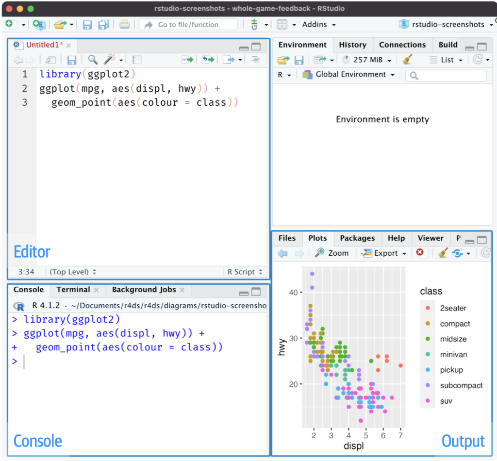
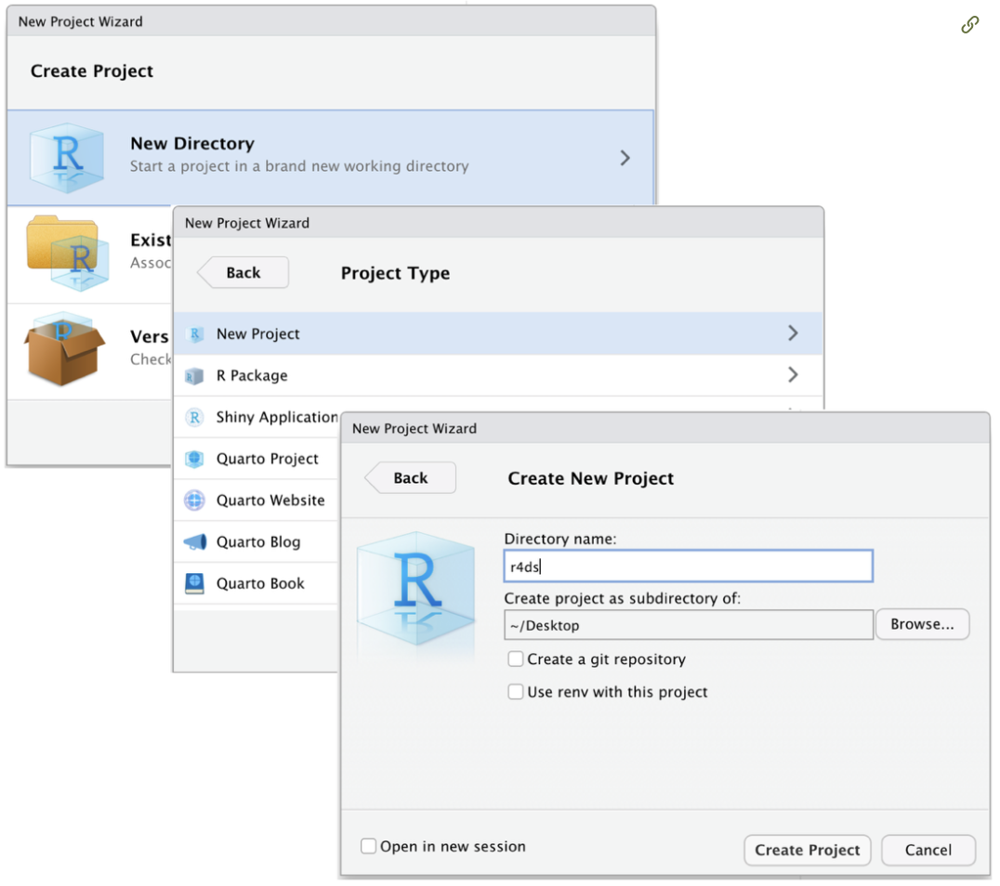
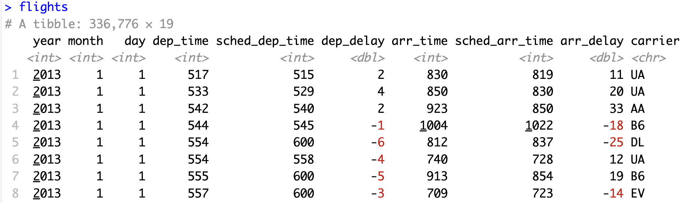
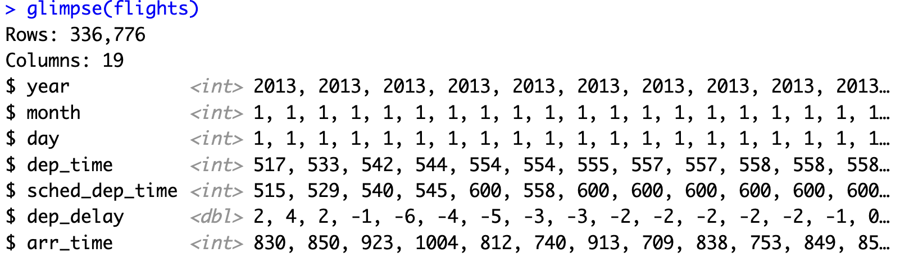
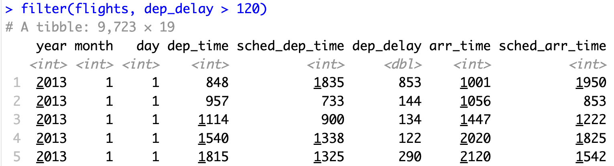

getwd () #現在の作業ディレクトリの場所を確認1. RStudioを使う
Rのデータ処理には，統合開発環境のデファクト・スタンダードとも言うべきRStudioが欠かせません。以下の図はスクリプト・エジターを開いたときのRStudioの画面です。

左側の[Editor]画面と[Console]画面が作業場となります。Rになれると，ほとんどの作業が[Editor]画面でのスクリプトの記述に費やされることと思います。
1.1. RStudioのプロジェクト管理機能
Rを利用し，レポートを作成するとき，データ，スクリプト，グラフなどが増えて行きます．そうしたデータ等が増えていくと，ファイルを整理し，まとめていくのが大変になって行きます．RStudioにはデータ管理はもちろんのことプロジェクト全体を管理するのに便利なProjectと呼ばれる機能が用意されています．そこで最初に，データを扱う上で有益なRStudioのProject機能を紹介します．
Project機能を利用すると，プロジェクトごとに，作業ディレクトリの場所，実行の履歴やオブジェクト（変数や関数），スクリプトなどが記憶されます．作業の再開時に，プロジェクトを開くとすぐにプロジェクトごとの以前の環境が利用でき便利です．
それではRStudioでProjectを作成してみましょう．Projectの作成は，メニューから，File > New Project…をクリックします．新しいプロジェクトNew Projectのためのディレクトリ名を尋ねるダイアログが開きます．

[Directory name]の空欄のボックスに，新規プロジェクトを作成するディレクトリ名を入力します．この例ではとりあえずr４dsという名前がつけられています。[Browse…]ボタンをクリックして，プロジェクトを置きたいディレクトリの場所を指定します．すると，新たに作ったプロジェクト用のディレクトリの下に，ディレクトリと同じ名前のプロジェクトができます．この例では“~/r４ds/”下に“r４ds.Rproj”ができます．次回の作業からは，RStudioのメニューからFile > Open Project…または，直接，ディレクトリを開いて，プロジェクト[r4ds.Rproj]をダブルクリックすれば，r4dsの環境が再現されます．
ちなみに，r4ds.Rprojをクリックし，RStuidoを起動させた後，コンソール画面にgetwd()―get working directory（現在の作業ディレクトリを取得する）を意味します―と入力し，現在の作業ディレクトリを確認してみてください．“~/r4ds/”と表示されるはずです．
1.2. tidyverse
Rでデータを処理を行うさい，頻繁に利用することになるtidyverseについてここで簡単に触れておきます. tidyverseおよび基本的なデータ処理についてはHadley Wickham, et al. (2023) R for Data Sciense: Import, Tidy, Trsnform, Visualize, and Model Data, second editionを読むことを強くお勧めします。また宋・矢内氏による「わたしたちのR: ベストプラクティスの探求」もお勧めのテキストです。
最初に，tidyverseをインストールし，利用できるようにしておきます。
install.packages("tidyverse") #tidyverseのインストール
library(tidyverse) #tidyverseの読み込みtidyverseの中に収められているデータ操作・処理のための基本的な関数は次の３つです。
特定の行（観察値）を抽出する - filter( )
特定の列（変数）を抽出する - select( )
処理をつなげる - パイプ演算子 |>
1.2.1 特定の行を抽出する - filter( )関数
tidyverseの中には練習用のデータflightsが用意されています。
library(nycflights13) #データflightsを利用可能にするコンソール画面にflightsとタイプすると以下の図が表示されます。

このデータフレームdataframe（正確にはtibble）の中には2013年にニューヨーク市から飛び立った336,776のフライトデータが収められています。左上の# A tibble: 336,776×19という表示は「このデータセットtibbleが336,776の行（フライトの観察値）と19の列（変数）を持っている」ことを示しています。すべての列（変数）を表示させるにはglimpse()を使うことができます。
glimpse(flights)
図にはすべて表示されて言いませんが，Rows: 336,776とColumns: 19という左上の表示から列（変数）がyear, month, day, dep_timeなど19変数があることが理解されます。
filter()は行（観察値）にもとづいて特定の行を抽出します。たとえば，2時間以上の遅れで出発したフライトを抽出してみましょう。
filter(flights, dep_delay > 120)
フライトの遅れはdep_delay変数が示しています。その中の2時間以上の遅れですから，抽出条件はdep_delay > 120です。この結果，抽出されたフライトは9,723に減少しています。このようにfilter( )関数は第1の引数にデータフレー名（tibble名），第2の引数に抽出条件をとります。
filter(dataframe名, 抽出条件)1.2.2 特定の列を抽出する - select( )関数
次に特定の列，すなわち変数を抽出します。このためにはselect( )関数を利用します。
select(dataframe名, 抽出する変数名)たとえば，データflightsからyear, month, dayの３つの列（変数）だけ取り出すとしましょう。
select(flights, year,month, day)これを実行すると，列（変数）が3つだけのデータtibbleが作成されます。
1.2.2 処理をつなげる - パイプ演算子 |>
データflightsに対して次のような一連のデータ処理を行うことを考えてみます.
dep_delay変数のうち2時間遅れのフライト行だけを取り出す.
さらにその結果から変数day, dest（行先の空港名）およびdep_dalayだけを取り出す.
1の処理はデータフflightsに対してfilter()関数を適用すること, 言いかえると、データflightsをfilter()関数に渡す、ということになります.この一連の処理をパイプ(|>)というものを使うと次のように表現できます.
flights |>
filter(dep_delay > 120)注意して欲しいのですが，ここでは一連の操作が|>で結合されていますので，filter( )関数の中にdataframe（tibble）名を入力する必要がなくなります。2の処理はこの結果をさらに，select( )関数に渡すことになります。
flights |>
filter(dep_delay > 120) |>
select(day,dest, dep_delay)このスクリプトの|>はパイプと呼ばれ，操作を連結するものです.日本語で言えば「そして」ということになるでしょうか1.パイプは頻繁に利用しますので，ショートカットを覚えておくことをお勧めします。Ctr/Cmd + Shift + Mです。
Footnotes
パイプ演算子のとても分かり安いイメージが宋財泫 (Jaehyun Song)・矢内勇生 (Yuki Yanai)氏の「私たちのR: ベストプラクティスの探究」において与えられています.↩︎